References
Terms
Index
Ein Index in Elasticsearch/Elastic 8 ist eine Sammlung von Dokumenten. Jedes Dokument besteht aus einer Reihe von Feldern, die als Schlüssel-Wert-Paare organisiert sind und die eigentlichen Daten repräsentieren. (Dokumenten-Datenbank)
Hier sind einige wichtige Eigenschaften zu Indizes:
- Struktur: Ein Elasticsearch-Index entspricht in einer relationalen Datenbank einer Tabelle. Allerdings können Indizes in Elasticsearch viele unterschiedlich strukturierte Dokumente enthalten.
- Schema: Sie müssen kein festes Schema definieren, bevor Sie Daten hinzufügen. Elasticsearch unterstützt dynamische Typen, was bedeutet, dass Sie Daten ohne vorherige Definition von Feldern hochladen können.
- Sharding: Ein Index wird in Shards unterteilt, die eine parallele Verarbeitung und verteilte Speicherung ermöglichen. Dies verbessert die Skalierbarkeit und Leistung
Nodes
Ein Node ist eine Elasticsearch instance.
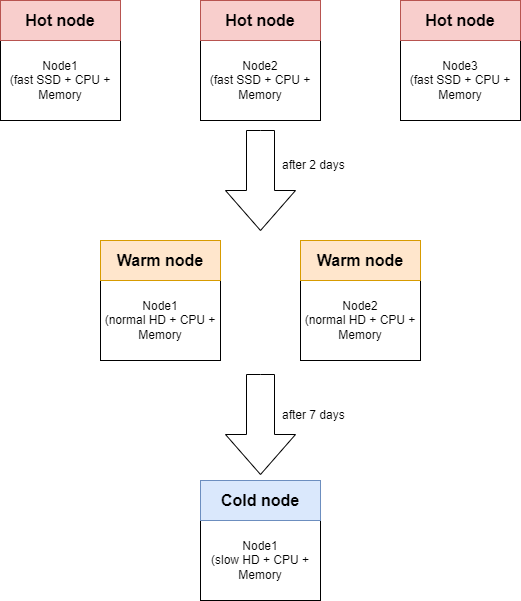
Shards
Jeder Index in Elasticsearch wird in Shards unterteilt.
Beats
Übersicht
Filebeat
Filebeat ist ein leichtgewichtiger Log-Shipper, der im Elastic Stack verwendet wird, um Logdaten von verschiedenen Quellen zu sammeln und an Elasticsearch zu senden. Die Hauptfunktionen von Filebeat sind:
- Logdaten sammeln: Filebeat kann Logdaten von verschiedenen Quellen wie Servern, Containern oder Cloud-Diensten erfassen. Es “tailt” die Logdateien, was bedeutet, dass es die neuesten Einträge kontinuierlich überwacht und verarbeitet.
- Datenweiterleitung: Die gesammelten Logdaten werden entweder direkt an Elasticsearch zur Indizierung oder an Logstash zur weiteren Verarbeitung gesendet. Dies ermöglicht eine zentrale Verwaltung und Analyse der Logs in Echtzeit.
- Zuverlässigkeit: Filebeat merkt sich den letzten verarbeiteten Logeintrag, sodass es nach einer Unterbrechung nahtlos dort weitermachen kann, wo es aufgehört hat. Dies ist besonders wichtig in Umgebungen, in denen Ausfälle auftreten können.
- Module und Integrationen: Filebeat bietet vorgefertigte Module für gängige Logformate, die das Sammeln, Parsen und Visualisieren von Daten erheblich vereinfachen. Diese Module sind so konzipiert, dass sie mit minimalem Aufwand eingerichtet werden können.
- Cloud- und Container-freundlich: Filebeat ist ideal für moderne Cloud- und Container-Umgebungen, da es automatisch neue Container erkennt und deren Logs überwacht.
Vergleichbar zu Promtail-with-Docker
Metricbeat
Metricbeat ist ein leichtgewichtiger Metrik-Shipper. Er wird auf Servern installiert, um regelmäßig Metriken vom Betriebssystem und von darauf laufenden Diensten zu sammeln. Hier sind einige der Hauptfunktionen von Metricbeat:
- Metrikensammlung: Metricbeat erfasst verschiedene Systemmetriken, wie CPU- und Speicherauslastung, sowie spezifische Metriken von Diensten wie z.B. Apache, NGINX, MySQL.
- Datenversand: Die gesammelten Metriken werden an einen definierten Output gesendet, typischerweise an Elasticsearch oder Logstash, wo sie weiterverarbeitet werden können.
- Container-Monitoring: Metricbeat kann auch in Container-Umgebungen eingesetzt werden, um Statistiken über andere Container auf demselben Host zu sammeln, ohne dass privilegierter Zugriff auf die Docker-API erforderlich ist.
Vergleichbar zu Telegraf-with-Docker
Heartbeat
Heartbeat ist ein leichtgewichtiger Shipper, der speziell für die Überwachung der Verfügbarkeit von Diensten entwickelt wurde. Hier sind die Hauptfunktionen von Heartbeat:
- Uptime-Überwachung: Heartbeat führt regelmäßige Prüfungen durch, um festzustellen, ob bestimmte Dienste oder Endpunkte (wie HTTP, TCP oder ICMP) erreichbar sind.
- Flexible Konfiguration: Du kannst Heartbeat so konfigurieren, dass es verschiedene Endpunkte in unterschiedlichen Intervallen überprüft. Zum Beispiel kann ein Monitor alle 10 Minuten laufen, während ein anderer nur während der Bürozeiten aktiv ist.
- Erweiterte Prüfungen: Heartbeat kann nicht nur die Erreichbarkeit prüfen, sondern auch spezifische Antworten, wie Statuscodes oder Inhalte, validieren.
Vergleichbar zu HealthChecks
Packetbeat
Packetbeat ist ein leichtgewichtiger Netzwerkpaketanalyzer, der speziell für die Überwachung und Analyse von Netzwerkverkehr entwickelt wurde. Hier sind die Hauptfunktionen von Packetbeat:
- Echtzeit-Überwachung: Packetbeat erfasst Netzwerkpakete in Echtzeit und sendet die gesammelten Daten an Elasticsearch oder Logstash.
- Protokollunterstützung: Es unterstützt eine Vielzahl von Anwendungsprotokollen, darunter HTTP, DNS, MySQL und viele andere. Dadurch kannst du die Leistung und Verfügbarkeit deiner Anwendungen überwachen.
- Leistungsanalyse: Mit Packetbeat kannst du wichtige Metriken wie Latenzzeiten, Fehler und Antwortzeiten analysieren, um die Leistung deiner Anwendungen zu optimieren.
- Passive Erfassung: Packetbeat arbeitet passiv, was bedeutet, dass es den Netzwerkverkehr ohne nennenswerte Latenz oder Störungen erfasst.
Winlogbeat
Winlogbeat ist ein leichtgewichtiger Shipper, der speziell für die Erfassung und den Versand von Windows-Ereignisprotokollen entwickelt wurde. Hier sind die Hauptfunktionen von Winlogbeat:
- Ereignisprotokollierung: Winlogbeat liest Ereignisse aus verschiedenen Windows-Ereignisprotokollen (z. B. Sicherheits-, Anwendungs- und Systemprotokolle) und filtert diese basierend auf benutzerdefinierten Kriterien.
- Datenversand: Die gesammelten Ereignisdaten werden an Elasticsearch oder Logstash gesendet, wo sie analysiert und visualisiert werden können.
- Echtzeitüberwachung: Winlogbeat überwacht die Ereignisprotokolle kontinuierlich und sendet neue Ereignisse in Echtzeit, sodass du sofortige Einblicke in die Systemaktivitäten erhältst.
- Flexibilität: Du kannst Winlogbeat so konfigurieren, dass es aus beliebigen Ereignisprotokollkanälen liest, was dir Zugang zu den für dich wichtigsten Daten gibt.
Auditbeat
Auditbeat ist ein leichtgewichtiger Shipper, der speziell für die Überwachung von Benutzeraktivitäten und Prozessen auf Systemen entwickelt wurde. Hier sind die Hauptfunktionen von Auditbeat:
- Ereignissammlung: Auditbeat kommuniziert direkt mit dem Linux-Audit-Framework und sammelt Auditdaten in Echtzeit. Es kann auch Ereignisse von Windows-Systemen erfassen.
- Überwachung von Benutzeraktivitäten: Es ermöglicht die Überwachung von Benutzeraktionen und Prozessen, was hilft, potenzielle Sicherheitsverletzungen zu erkennen und die Einhaltung von Sicherheitsrichtlinien zu überprüfen.
- Dateiintegritätsüberwachung: Auditbeat kann Änderungen an kritischen Dateien, wie Konfigurationsdateien oder Binärdateien, überwachen und meldet diese in Echtzeit.
- Einfache Integration: Die gesammelten Daten werden an Elasticsearch oder Logstash gesendet, wo sie analysiert und visualisiert werden können, oft in Kombination mit Kibana.
- Effiziente Datenverarbeitung: Auditbeat gruppiert verwandte Ereignisse zu einem einzigen Datensatz, was die Analyse erleichtert und die Datenstruktur verbessert.
Elasticsearch
Data Streams
In Elasticsearch sind Data Streams eine spezielle Funktion, die es ermöglicht, zeitbasierte Daten in einem append-only Format über mehrere Indizes hinweg zu speichern. Hier sind einige wichtige Punkte zu Data Streams:
- Zweck: Data Streams sind ideal für kontinuierlich generierte Daten wie Logs, Ereignisse und Metriken. Sie bieten eine einfache Möglichkeit, Daten zu indizieren und abzufragen, ohne sich um die zugrunde liegenden Indizes kümmern zu müssen.
- Automatische Verwaltung: Data Streams bestehen aus einer oder mehreren automatisch generierten, versteckten Indizes, die die Daten speichern. Sie können Index-Lifecycle-Management (ILM) verwenden, um die Verwaltung dieser Indizes zu automatisieren, z. B. um ältere Indizes auf kostengünstigere Hardware zu verschieben oder nicht mehr benötigte Indizes zu löschen.
- Schreibindex: Der zuletzt erstellte Index innerhalb eines Data Streams fungiert als Schreibindex, in den neue Dokumente eingefügt werden. Sie können keine neuen Dokumente in andere Indizes innerhalb des Streams einfügen.
- Zeitstempel: Jedes Dokument, das in einen Data Stream indiziert wird, muss ein Feld mit dem Namen @timestamp enthalten, das als Datum oder Datum_Nanos typisiert ist. Dies ist entscheidend für die Verwaltung und Abfrage der Daten.
- Einschränkungen: Data Streams sind hauptsächlich für Szenarien gedacht, in denen bestehende Daten selten aktualisiert werden. Direkte Aktualisierungen oder Löschungen von Dokumenten sind nicht möglich, es sei denn, Sie greifen direkt auf den zugrunde liegenden Index zu.
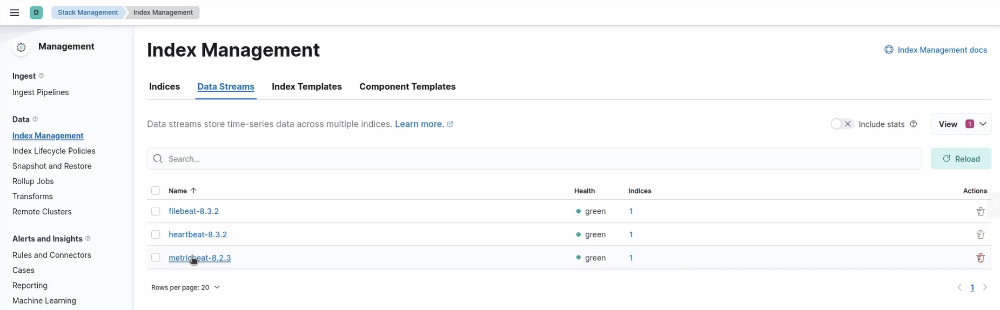
Indexes
Jeder Index hat einen DataStream aus dem die Daten kommen bzw. die Daten von einem DataStream werden an einen Index weitergeleitet.
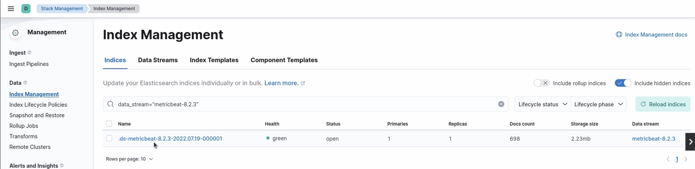
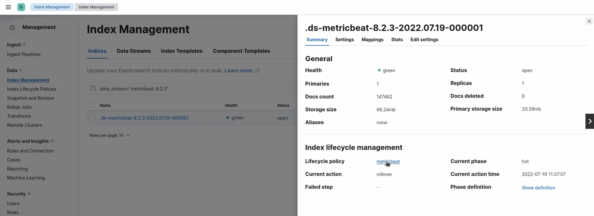
Data Views
Create Data View
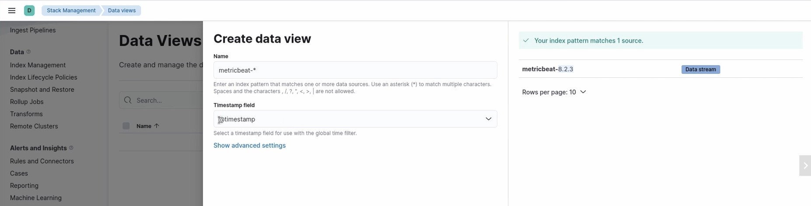
Discover Data View
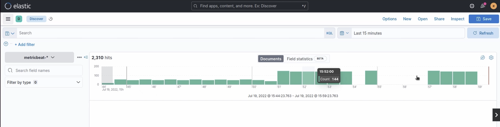
Index Livecyle Management
Ein DataStream verweist auf eine Index livecycle policy:
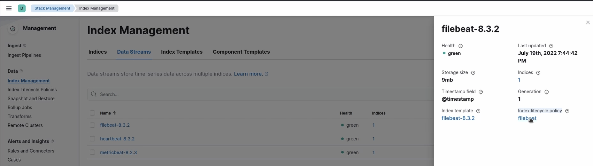
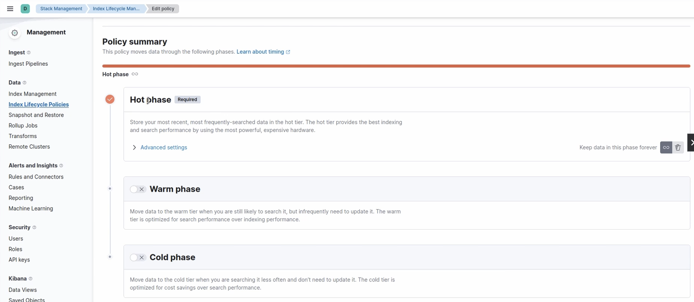
Kibana UI
Discover Data View
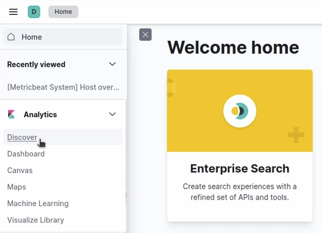
Discover a Data View
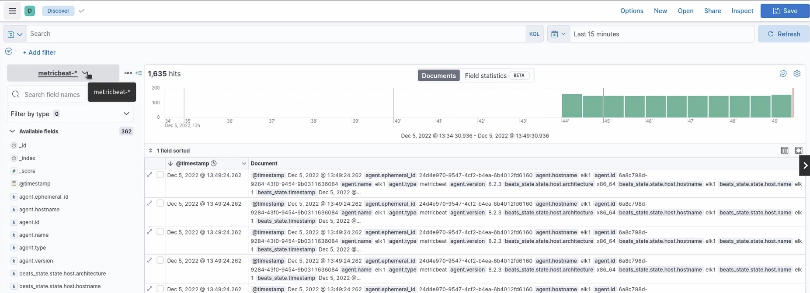
Show detailed information of a document
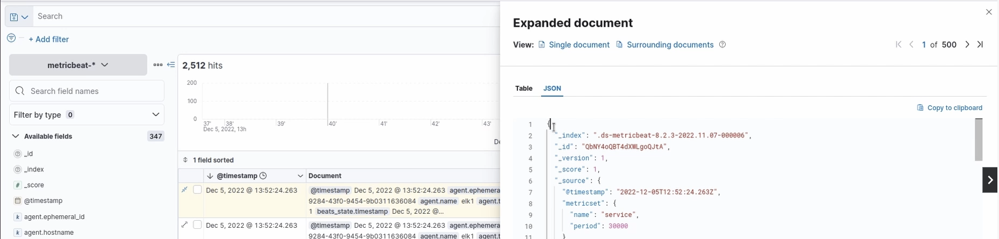
Observability Logs
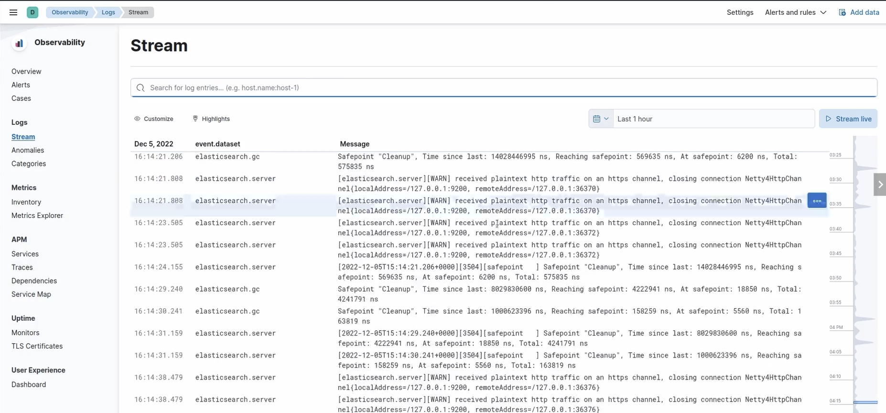
Spaces
In Kibana sind Spaces eine Funktion, die es ermöglicht, Dashboards, Visualisierungen und andere gespeicherte Objekte in sinnvolle Kategorien zu organisieren. Hier sind einige wichtige Punkte zu Spaces:
- Organisierung: Jeder Space ist unabhängig, was bedeutet, dass die Objekte in einem Space nicht die in einem anderen Space beeinflussen. Dies hilft, die Benutzeroberfläche übersichtlich zu halten.
- Zugriffssteuerung: Der Zugriff auf Spaces kann basierend auf Benutzerrollen gesteuert werden. Das bedeutet, dass bestimmte Benutzer nur auf die Spaces zugreifen können, für die sie Berechtigungen haben.
- Standard-Space: Kibana erstellt automatisch einen Standard-Space, in dem alle bestehenden gespeicherten Objekte zu finden sind, wenn du von einer früheren Version aktualisierst.
- Benutzerfreundlichkeit: Bei der Anmeldung in Kibana wirst du aufgefordert, einen Space auszuwählen, und du kannst jederzeit zwischen den Spaces wechseln.
- Anpassung: Du kannst Spaces benennen, beschreiben und sogar ein individuelles Avatar-Bild hinzufügen, um sie visuell zu unterscheiden.
Aktuell ausgewählter Space 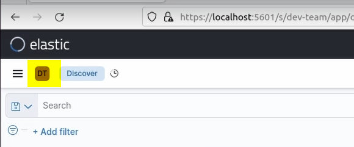